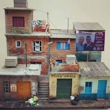

Las Mejores Terrazas

Los mejores cuidados
No te olvides de mantener tu terraza limpia y ordenada. Barre regularmente para quitar hojas y otros residuos, y limpia los muebles y las superficies según sea necesario para asegurarte de que tu terraza se vea siempre hermosa y acogedora.